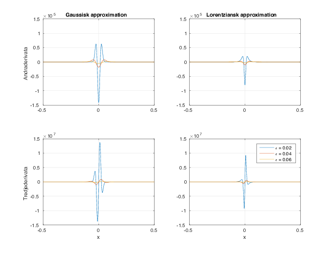

Figure 1: Två distributioner och deras förstaderivator i gränsen \( \epsilon \to 0 \).

Konstruera approximationerna till de första tre derivatorna av en deltafunktion svarande mot approximationerna (7.7) och (7.8) av deltafunktionen! Skissera funktionernas beteende (m.h.a. dator om du vill) och reflektera över varför deras integraler mot en funktion \( f(x) \) ger de resultat de gör i gränsen \( \epsilon \rightarrow 0 \).
Hint. Det är instruktivt att lösa uppgiften på två sätt:
Answer. Integralerna skall plocka ut funktionens första tre derivator i punkten \( x=0 \) med tecken \( (-1)^n \) för derivata av ordningen \( n \).
Solution. Rättfram derivering ger $$ \begin{align} h_\epsilon(x)&=\frac1{\epsilon\sqrt\pi}e^{-x^2/\epsilon^2},\\ h_\epsilon'(x)&=-\frac{2x}{\epsilon^2}h_\epsilon(x),\\ h_\epsilon''(x)&=\frac{4x^2-2\epsilon^2}{\epsilon^4}h_\epsilon(x),\\ h_\epsilon'''(x)&=-\frac{8x^3-12x\epsilon^2}{\epsilon^6}h_\epsilon(x), \end{align} $$ och $$ \begin{align} h_\epsilon(x)&= \frac\epsilon{\pi\left(x^2+\epsilon^2\right)},\\ h_\epsilon'(x)&= -\frac{2 x}{x^2+\epsilon^2}h_\epsilon(x) ,\\ h_\epsilon''(x)&= \frac{6x^2-2\epsilon^2}{\left(x^2+\epsilon^2\right)^2}h_\epsilon(x) ,\\ h_\epsilon'''(x)&= -\frac{24 x^3 -24x\epsilon^2}{\left(x^2+\epsilon^2\right)^3}h_\epsilon(x) . \end{align} $$ Dessa funktioner och derivator är skisserade för \( \epsilon = 0.02,0.04,0.06 \) i figur 1 och 2.
Figure 1: Två distributioner och deras förstaderivator i gränsen \( \epsilon \to 0 \).
Figure 2: Andra- och tredjederivator av två distributioner i gränsen \( \epsilon \to 0 \).

Deltafunktionens derivator ska gå att partialintegrera (se diskussionen av ekvation (7.9) i Cederwall). Det vill säga (alla integraler går över hela \( \mathbb R \), så alla randtermer är lika med noll): $$ \begin{align} \int \mathrm dx\ \delta'(x)f(x)&=-\int \mathrm dx\ \delta(x)f'(x)=-f'(0),\\ \int \mathrm dx\ \delta''(x)f(x)&=\int \mathrm dx\ \delta(x)f''(x)=f''(0),\\ \int \mathrm dx\ \delta'''(x)f(x)&=-\int \mathrm dx\ \delta(x)f'''(x)=-f'''(0). \tag{1} \end{align} $$
Låt oss visa detta explicit för de två distributionerna som betraktas här. För en godtycklig slät funktion \( f(x) \) kan vi Taylorutveckla: $$ \begin{equation} f(\epsilon)\approx f(0)+f'(0)x+\frac12f''(0)x^2+\frac16f'''(0)x^3+\ldots. \end{equation} $$ I båda fallen ovan är \( h_\epsilon(x) \) en jämn funktion, så alla termer av typen \( x^{2n+1}h_\epsilon(x) \), \( n\in\mathbb Z \) integreras till noll.
Vi börjar titta på den Gaussiska approximationen. Inför notationen \( f^{(n)}(0)\equiv f^{(n)}_0 \). För förstaderivatan får vi följande genom att utföra integralerna (se formelsamling) eller genom att partialintegrera upprepade gånger, $$ \begin{align} \int\mathrm dx\ f(x)h'_\epsilon(x)&\approx-\frac{2}{\epsilon^2}\int\mathrm dx\ xh_\epsilon(x)\left[f'_0x+\frac16f'''_0x^3+\ldots\right] \nonumber\\ &=-f'_0-\frac14f'''_0\epsilon^2+\ldots. \end{align} $$ Det är lätt att inse att alla termer som innehåller högre ordningens derivator av \( f(x) \) kommer vara proportionella mot \( \epsilon \), och gå mot noll. Kvar finns bara den väntade \( -f'(0) \).
På samma sätt studerar vi integralen över andraderivatan: $$ \begin{align} \int\mathrm dx\ f(x)h''_\epsilon(x)&\approx\int\mathrm dx\ \frac{4x^2-2\epsilon^2}{\epsilon^4}h_\epsilon(x)\left[f_0+\frac12f''_0x^2+\ldots\right] \nonumber\\ &=\frac{2-2}{\epsilon^2}f(0)+\frac{3-1}2f''_0 + \epsilon^2 [\ldots]. \end{align} $$ De högre ordningens termer kommer återigen vara proprotionella mot \( \epsilon \), och försvinner när gränsvärdet tas, vilket resulterar i att bara \( f''(0) \) finns kvar.
Vi övergår nu till att studera den Lorentzianska approximationen. På samma sätt som ovan får vi för förstaderivatan $$ \begin{gather} \int\mathrm dx\ f(x)h'_\epsilon(x)\approx-\int\mathrm dx\ \frac{2 x}{x^2+\epsilon^2}h_\epsilon(x)\left[f'_0x+\frac16f'''_0x^3+\ldots\right] \nonumber\\ =-f'_0-\frac\epsilon{3\pi}\left[x+\frac{\epsilon^2x}{2\epsilon^2+2x^2}-\frac{3\epsilon}2\tan^{-1}\frac x\epsilon\right]_{-\infty}^\infty+\ldots. \end{gather} $$ Eftersom att \( x \) här är en integrationsvariabel har den inget konstigt för sig, utan går linjärt mot oändligheten. I gränsen \( \epsilon\rightarrow 0 \) går därför de högre ordningens termer mot noll, och vi får igen det väntade resultatet.
För andraderivatan får vi $$ \begin{gather} \int\mathrm dx\ f(x)h''_\epsilon(x)\approx\int\mathrm dx\ \frac{6x^2-2\epsilon^2}{\left(x^2+\epsilon^2\right)^2}h_\epsilon(x)\left[f_0+\frac12f''_0x^2+\ldots\right] \nonumber\\ =\frac{3-3}{4\epsilon^2}f(0)+\frac{9-1}8f''_0 + \epsilon [\ldots] \end{gather} $$ där alltså högre ordningens termer är proportionella mot \( \epsilon \).
Att bevisa ekvation (1) för de båda fallen av \( h_\epsilon(x) \) lämnas som en övning.
Vi kan också resonera utgående från figurerna 1 och 1 varför vi får dessa resultat. För att göra detta drar vi oss först till minnes uttrycken för olika ordningars derivator i termer av finita differenser: $$ \begin{align} f'(x) &= \lim_{\epsilon \to 0} \frac{f(x+\epsilon/2)-f(x-\epsilon/2)}{\epsilon} \\ f''(x) &= \lim_{\epsilon \to 0} \frac{f(x+\epsilon)-2f(x)+f(x-\epsilon)}{\epsilon^2} \\ f'''(x) &= \lim_{\epsilon \to 0} \frac{f(x+3\epsilon/2)-3f(x+\epsilon/2)+3f(x-\epsilon/2)-f(x-3\epsilon/2)}{\epsilon^3}. \end{align} $$ Det är inte svårt att föreställa sig att förstaderivatorna som ritats upp i den andra raden av figur 1 kommer att plocka upp \( -f(0+\epsilon/2) \) och \( +f(0-\epsilon/2) \). Notera också att amplituden på de två topparna är lika stor och växer som \( 1/\epsilon \). Resultatet motsvarar alltså den finita differensen som definierar förstaderivatan av en funktion \( f(x) \) i punkten \( x=0 \), fast med motsatt tecken.
På liknande sätt kan vi resonera kring de högre ordningarnas derivator och jämföra figurerna med uttrycken från finita differenser. Notera speciellt den relativa storleken på de olika topparna och att amplituderna blir högre för andraderivatorna (\( \sim 1/\epsilon^2 \)) och ännu högre för tredjederivatorna (\( \sim 1/\epsilon^3 \)).